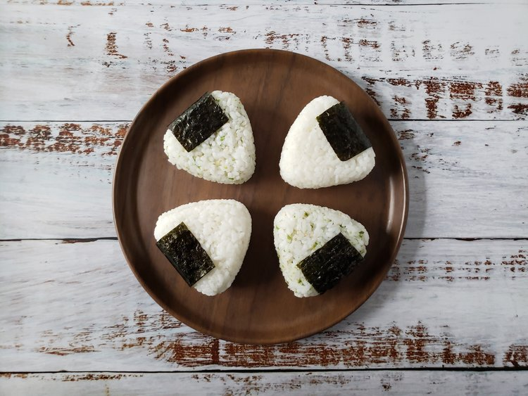

Doman Rice Balls

“Simple triangular balls of steamed sticky rice sprinkled with naught but a pinch of sea salt so that one might appreciate the subtle flavors of the original ingredients.”
— Eorzea Database
Ingredients
-
Japanese Short Grain Rice
-
Water
-
Salt
-
Nori (Seaweed)
Steps
-
Wash and drain the rice 3 to 5 times until the water runs mostly clear.
-
Soak the rice in water for 30 minutes.
-
Cut the nori into rectangular strips and set aside for later.
-
Strain the rice in a sieve for 15 minutes.
-
Mix the salt into the water and dissolve completely.
-
Put the rice and water solution into a pot with a tight-fitting lid.
-
Bring the pot to a boil over medium-high heat.
-
Cover, set the heat to low and simmer for 12 minutes.
-
Remove the pot from the heat and set aside for 10 minutes.
-
Transfer the rice to a large bowl and allow it to cool.
-
Shape a 1/2 cup portion of rice into a triangle using a mold, plastic sandwich bag, plastic wrap or with wet hands.
-
Apply a strip of nori to one side of the triangle.
-
Repeat step 11 and 12 until all the rice is shaped.